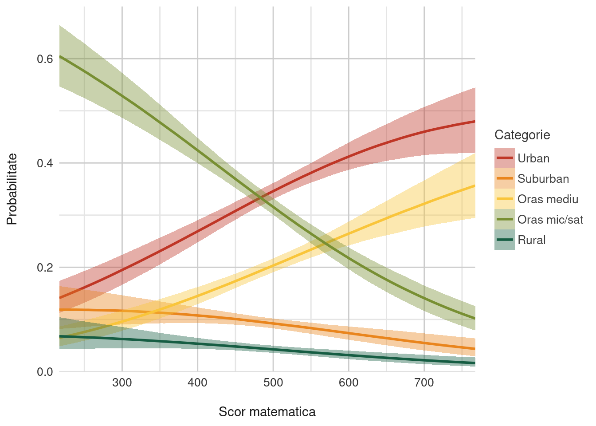
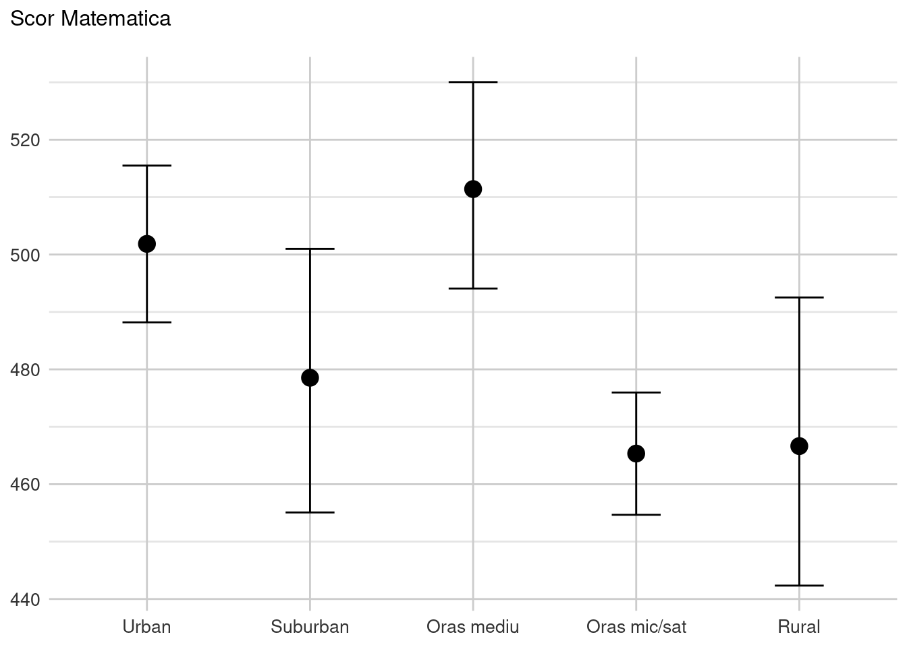
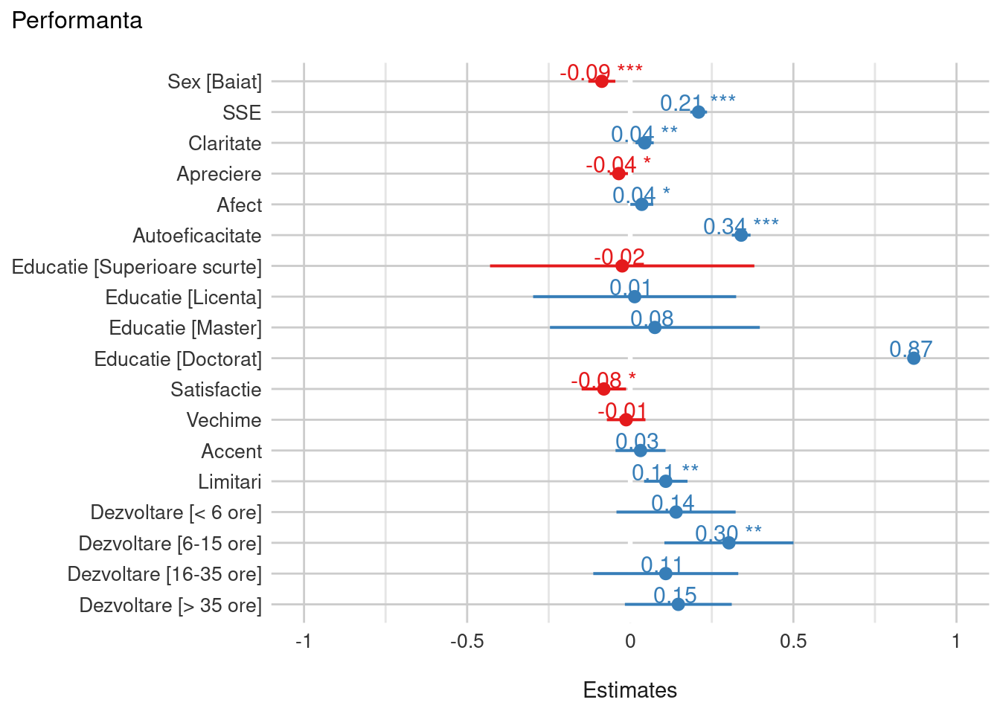

Analize suplimentare TIMSS
Diferențele pe domenii/subdomenii
Există diferențe semnificative între scorurile obținute de elevii români, în funcție de domeniile și subdomeniile de conținut și/sau abilitățile cognitive la matematică? Dacă da, pe ce domenii se obțin scorurile medii cele mai mici?
Domeniile de conținut
Preluat din raportul de țară (2021), detalii aici (p.36)
Numere este compus din: mulțimea numerelor întregi, fracții și fracții zecimale și rapoarte, proporții și procente. Elevilor li s-a cerut să efectueze calcule și să rezolve probleme care vizau conceptul de număr întreg și algoritmi sau operații procedurale legate de întregi, fracții și fracții zecimale.
Algebră este compus din: expresii, operații și ecuații și relații și funcții. Elevilor li s-a cerut să rezolve situații din viața reală folosind modele algebrice și să explice relații care se refereau la concepte algebrice. De exemplu, elevii au primit probleme care se refereau la ecuații liniare și funcții, pentru a exprima cantități care se transformă proporțional (de exemplu, conceptul de pantă).
Geometrie: Pe baza înțelegerii figurilor geometrice și a măsurilor (lungimi, arii, măsuri de unghiuri), elevilor li s-a cerut să analizeze proprietățile unor figuri și corpuri geometrice variate și să calculeze perimetre, arii și volume. Elevii au rezolvat probleme și au furnizat explicații și argumentări pe baza unor concepte și relații geometrice, precum congruența, asemănarea, teorema lui Pitagora etc.
Date și probabilități, a fost compus din: organizarea datelor și probabilități. Elevilor li s-a cerut să „citească” și să extragă date relevante dintr-o varietate de forme de prezentare vizuală (tabele, grafice, diagrame), să facă prelucrări statistice de bază care țin cont de distribuția datelor, să organizeze și să reprezinte date pentru a putea răspunde la întrebări.
| Estimari ale diferentelor de grup | |||
|---|---|---|---|
| Medie Estimata | Domeniul Cognitiv | Prag inferior 95% | Prag superior 95% |
| 487.9647 | Numere | 485.1315 | 491.0165 |
| 502.4040 | Algebra | 499.4640 | 505.3630 |
| 483.6599 | Geometrie | 480.6128 | 486.4744 |
| 468.6070 | Probabilitati | 465.7086 | 471.5699 |
Există diferențe notabile între domeniile de conținut cu perechea algebră - probabilități fiind poate cea mai evidentă, ceva mai mult de 30 de puncte.
Domeniul cognitiv
Cunoaștere se referă la informații, concepte și proceduri pe care elevii trebuie să le știe.
Aplicare se referă la abilitatea elevilor de a aplica cunoștințele și conceptele matematice înțelese pentru a rezolva probleme sau pentru a răspunde la întrebări.
Raționament conține itemi care evaluează abilitățile cognitive implicate în rezolvarea unor probleme nefamiliare, care se referă la situații complexe, la probleme care se rezolvă în mai mulți pași.
| Estimari ale diferentelor de grup | |||
|---|---|---|---|
| Medie Estimata | Domeniul Cognitiv | Prag inferior 95% | Prag superior 95% |
| 485.0700 | Aplicare | 482.3200 | 488.1140 |
| 495.5240 | Cunoastere | 492.6703 | 498.4745 |
| 492.3273 | Rationament | 489.2131 | 495.0620 |
Mediul de proveniență
Există o diferență semnificativă a scorurilor la matematică în funcție de mediul de proveniență al elevului? În prezența altor variabile de control, mediul de proveniență are sau își păstrează un efect ridicat? În cazul în care efectul mediului de proveniență e mare, se poate face o analiză mai detaliată a scorurilor elevilor din rural și urban mic (inclusiv pe domenii, subdomenii și abilități cognitive) și a factorilor explicativi?
Da, diferențele sunt notabile. De exemplu, în figura de mai jos, după ce controlăm pentru o serie de factori (dar cel mai important rămâne cel al resurselor financiare de care dispune familia) probabilitatea de a găsi un elev performant (peste 600 de puncte) în zonele rurale este de doar de câteva procente. Invers, un elev foarte bun va fi găsit in 70% din cazuri în categoriile combinate urban + oraș mediu.

Altfel spus, zonele rurale, de oraș mic/sat și suburban sunt net dezavantajate față de zonele urbane formate din orașe mari sau orașe medii. Figurile de mai jos ilustrează această situație pentru Matematică, atât pentru tot setul de date cât și pe toate domeniile – imaginea este identică pentru toate aceste cazuri.

Model mai larg
Ce factori/cumul de factori au efect important asupra scorului obținut de elevii români la matematică? Ne interesează mai ales factori privind predarea (tot ce e disponibil), profesorii de matematică (nivelul de formare profesională, vechimea, auto-eficacitatea etc.) respectiv elevii (mediul de proveniență – rural-urban mic-urban mare, nivelul de autonomie, percepții privind profesor/predare și orice ai descoperit relevant).
Modelul construit arată în general aceleași efecte pe care le observăm și in alte țări: variabilele cele mai importante rămân în continuare autoeficacitatea sau cele legate de contextul familial (i.e., statutul socioeconomic) vezi Modelul 1 de mai jos. Variabilele de nivel superior (legate de profesor, sau contextul școlar) rămân cu un efect redus sau nesemnificativ, vezi Modelul 2.
| Model 1 | Model 2 | |||
|---|---|---|---|---|
| Predictors | Estimates | p | Estimates | p |
| (Intercept) | 188.29 | <0.001 | 141.17 | <0.001 |
| Sex [Baiat] | -8.47 | <0.001 | -8.15 | <0.001 |
| SSE | 12.03 | <0.001 | 12.94 | <0.001 |
| Claritate | 1.66 | <0.001 | 1.90 | 0.002 |
| Apreciere | -1.19 | <0.001 | -1.54 | 0.014 |
| Afect | 1.52 | <0.001 | 1.81 | 0.049 |
| Autoeficacitate | 15.89 | <0.001 | 15.62 | <0.001 |
| Educatie [Superioare scurte] |
-2.31 | 0.905 | ||
| Educatie [Licenta] | 1.26 | 0.933 | ||
| Educatie [Master] | 7.06 | 0.645 | ||
| Educatie [Doctorat] | 81.33 | 0.120 | ||
| Satisfactie | -4.18 | 0.020 | ||
| Vechime | -0.12 | 0.677 | ||
| Accent | 1.63 | 0.421 | ||
| Limitari | 5.18 | 0.001 | ||
| Dezvoltare [< 6 ore] | 13.13 | 0.132 | ||
| Dezvoltare6-15 ore | 28.31 | 0.003 | ||
| Dezvoltare16-35 ore | 10.18 | 0.337 | ||
| Dezvoltare [> 35 ore] | 13.78 | 0.078 | ||
| Random Effects | ||||
| σ2 | 3415.31 | 3537.52 | ||
| τ00 | 2687.22 idschool | 2275.80 idschool | ||
| ICC | 0.44 | 0.39 | ||
| N | 197 idschool | 178 idschool | ||
| Observations | 17483 | 3936 | ||
| Marginal R2 / Conditional R2 | 0.236 / 0.572 | 0.293 / 0.570 | ||
Reprezentarea grafică a celor doua modele se află mai jos. Cu roșu sunt reprezentate efectele considerate “negative”, cu excepția Limitări care reprezintă percepțiile unei predări limitată de nevoile elevilor (raportată de profesor) - care a fost codată invers și deci interpretarea se face în sens opus, adică o creștere in această percepție este asociată cu o scădere a performanței școlare.

Context european
Există o diferență semnificativă între scorul mediu obținut la matematică de elevii de clasa a IV-a respectiv a VIII-a? Dacă da, care este mai mic și cât de mic e față de media europeană? (daca exista date)
Nu putem răspunde decât parțial la această întrebare. România este prezentă în TIMSS 2019 doar cu un eșantion din populația elevilor de clasa a 8-a. Rezultatele pe acest set de date sunt prezentate în raportul de țară publicat anul trecut din care preluăm câteva idei în paragrafele de mai jos. Cu toate acestea, se pot face câteva inferențe din eșantionarea făcută în anul 2011, când, au fost prelevate ambele clase. Atunci diferențele între cele doua clase erau mari, în defavoarea anilor superiori (clasa a 4-a, 482 de puncte; clasa a 8-a, 458 de puncte). Aceste date au însă deja peste 11 ani vechime ceea ce limitează încrederea noastră în a trage concluzii despre situația actuală.
Raportul de țară pentru România (p.8): În perioada 1995-2003, România a obținut scoruri la matematică în intervalul 472-475 puncte, urmând ca în anii 2007 și 2011 scorul să scadă la 461 (2007) și 458 (2011). În 2019, România a înregistrat o ușoară creștere ajungând la 479 puncte, fiind plasată în continuare sub media internațională TIMSS (500).
Scorul mediu obținut de elevii români la matematică (479) este foarte aproape de pragul Intermediate International Benchmark (corespunzător unui scor de 475), ceea ce ar putea fi considerat „o notă de trecere”, dar care, în mod evident, este foarte departe de ceea ce ne-am dori. Scorul obținut este cel mai mare scor din cele șase participări la TIMSS de până acum, o revenire după căderea din 2007 și 2011. Oricum, scorul este semnificativ sub media internațională: niciuna dintre țările europene participante nu a obținut un scor mai mic. Dintre țările europene participante, cel mai mare scor este obținut de Irlanda. Scorul României este foarte aproape scorurile Franței și Noii Zeelande, care au introdus reforme în ultimii ani. Scorul României este aproape de scorul obținut de Bahrein (481), dar trebuie menționat faptul că, din 2011, creșterea Bahrainului a fost de 72 de puncte, iar a României de 21 de puncte. Ungaria a crescut din 2011 cu 12 puncte, dar de la 505 la 517, iar Lituania a crescut cu 18 puncte, de la 502 la 520.
În ceea ce privește distribuția performanței la matematică, aceasta este inegală: - Aproximativ 6% din elevii români reușesc să atingă criteriile de referință pentru performanță avansată (advanced benchmark - corespunzător unui scor de 625), spre deosebire de elevii din Anglia - 11%, Ungaria - 11%, Lituania - 10%; - Un sfert (25%) dintre elevii români ating criteriile pentru performanță înaltă (high benchmark - corespunzător unui scor de 550), spre deosebire de elevii din Anglia - 35%, Ungaria - 36%, Lituania - 37%; - Jumătate (52%) reușesc să se încadreze în criteriile intermediare (corespunzător unui scor de 475). Aceste rezultate ne plasează la coada primei jumătăți a clasamentului; - Un număr foarte mare de elevi (22%) nu reușesc să atingă nici măcar criteriile de bază de literație numerică (low benchmark- corespunzător unui scor de 400), spre deosebire de elevii din Anglia - 10%; Ungaria - 10%, Lituania - 7%. Chiar și multe din țările care se plasează mai jos din punct de vedere al poziției absolute în clasamentul din 2019 stau mai bine la capacitatea de a angaja intelectual toate straturile de elevi: nivelul de analfabetism numeric (procentul de eșec la criteriile de bază) este mai mic în Italia - 9% și în Franța - 12%. Totodată, la extreme, putem găsi 15% dintre elevi care au obținut un scor de sub 356 și cei 3% cu scorurile peste 650, aceștia constituind aproape o cincime din numărul total al elevilor români ale căror scoruri sunt atât de depărtate de medie încât este greu de crezut că sunt rezultate ale unui sistem de educație care oferă șanse egale și acces egal tuturor copiilor.
Literație
In general ne preocupă și dacă problemele de literație sunt un factor explicativ important pentru nivelurile scăzute de numerație (dacă există date sau acces la date care să urmărească ambele domenii, gen PISA)
Din câte știm, nu există date publice privind această tema în mod specific. Există în schimb o serie de articole publicate.
De exemplu, majoritatea cercetărilor din acest domeniu tind să se concentreze pe compararea a patru grupuri de elevi: elevi cu dificultăți la matematică și lectură, elevi care au doar dificultăți la matematică, elevi care au doar dificultăți la lectură și elevi care au rezultate normale 1
În general, elevii cu dificultăți în ambele domenii academice tind să obțină rezultate mai slabe la evaluările la matematică decât elevii cu dificultăți doar într-un singur domeniu. Acest lucru este ceea ce ne-am aștepta.
Elevii cu dificultăți la matematică și lectură se caracterizează prin slăbiciuni atât în rezolvarea problemelor, cât și în stăpânirea faptelor aritmetice. Mai important, deficitele atât la matematică, cât și la citire încă din clasa a doua sunt omniprezente și stabile pe parcursul claselor a doua și a treia, chiar și atunci când IQ-ul este menținut constant. De asemenea, se pare că dificultățile de calcul la matematică pot contribui mai mult la problemele de învățare a rezolvării problemelor de matematică decât dificultățile de înțelegere a cititului.
Cauzele sunt ca de obicei multifactoriale. Studiile GWAS (Genome-Wide Association Studies) arată că există componentă genetică substanțială în ceea ce privește abilitățile copiilor la citire și matematică și se estimează că aproximativ jumătate din corelația observată în aceste trăsături se datorează unor efecte genetice comune 2.
Evident, genele nu explică toate variația naturală pe care fenomenul o arată. Alte cerectări ne indică faptul că statutul socio-economic este un factor predictiv pentru abilitățile timpurii de limbaj, alfabetizare și pentru abilitățile de calcul nesimbolic 3
Footnotes
Rutherford-Becker, K.J., Vanderwood, M.L. Evaluation of the Relationship Between Literacy and Mathematics Skills As Assessed By Curriculum-Based Measures. Contemp School Psychol 14, 23–34 (2009). https://doi.org/10.1007/BF03340948↩︎
Davis, O., Band, G., Pirinen, M. et al. The correlation between reading and mathematics ability at age twelve has a substantial genetic component. Nat Commun 5, 4204 (2014). https://doi.org/10.1038/ncomms5204.↩︎
Bonifacci, P., Compiani, D., Affranti, A., & Peri, B. (2021). Home literacy and numeracy interact and mediate the relationship between socio-economic status and early linguistic and numeracy skills in preschoolers. Frontiers in Psychology, 12.↩︎